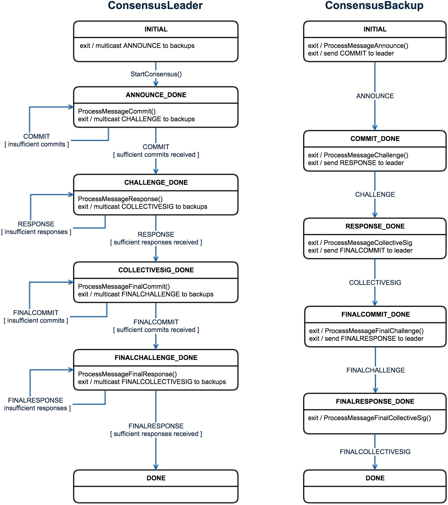

Consensus
This section describes how PBFT consensus (as initially designed in the Zilliqa whitepaper) is implemented and used in the core Zilliqa code.
Usage in the Protocol
Consensus is used in the following stages of the protocol:
| Data | Members | Timing |
|---|---|---|
| DS Block | DS committee | After PoW window |
| Shard Microblock | Shard nodes | After Tx processing by the shard nodes |
| DS Microblock + Tx Block | DS committee | After Tx processing by the DS nodes |
| VC Block | DS committee | After DS nodes enter into view change |
State Machine
The consensus protocol is implemented across two classes: ConsensusLeader and ConsensusBackup. The diagram below shows the state transitions for both leader and backup.

Initial State
The INITIAL state is set when the object for each class is first created (e.g., see DirectoryService::RunConsensusOnDSBlockWhenDSPrimary).
Announcement and Commitment Phase
After instantiation, the node running the ConsensusLeader kicks off the sequence by sending out the announcement message. The announcement includes the data that all the peers need to reach consensus on. Each node running a ConsensusBackup then processes the announcement message, which also means running the validator function relevant to the type of consensus (e.g., DirectoryService::DSBlockValidator).
If the announcement is accepted, a commit is sent back to the leader. The leader stays in this phase until the required number of commits (2/3) is received from the backups (note that the leader itself is part of the 2/3+1 requirement laid out in the whitepaper).
Challenge and Response Phase
After receiving the required number of commits, the leader generates the challenge, which is a function of the aggregated commits and public keys of everyone who committed (including the leader itself). The challenge is then sent out to the committed backups, who send back a response message afterwards.
Collective Signature Phase
Once all responses have been collected, the leader generates the collective signature, and sends out both the collective signature and the response map (which indicates who participated in both commit and response phases) to all peers. With this information, the backups can then verify the collective signature, and this effectively concludes the round of consensus.
Two-Round Consensus
In actuality the state machine above represents just half of the PBFT consensus sequence. A full consensus requires running through the above phases in two rounds.
There are a couple of differences between rounds. First, the announcement triggers the start of round 1. For round 2, the collective signature message serves as the trigger. Second, the message to co-sign in round 1 is the data that the user intends to be verified (e.g., DS Block). For round 2, the message to co-sign is that same data plus the collective signature and response map from round 1.
Consensus Subsets
The consensus protocol was initially designed as a single linear sequence from INITIAL to DONE. However, network instability inevitably would frequently lead to one or more view changes, slowing down the progress of the Mainnet.
To address this situation, we changed the consensus implementation to support multiple concurrently running consensuses across different subsets of peers. This is how it works:
Note: For the Mainnet we have set the number of subsets to 2 at the DS level and just 1 at the shard level. The steps below assume this count. Other counts are theoretically supported by the code but may not have been fully tested at this point.
Instead of immediately progressing after receiving the required 2/3 commits, the leader now waits for a maximum duration of
COMMIT_WINDOW_IN_SECONDSseconds to receive commits. It cuts the waiting time short only if the percentage of peers specified byCOMMIT_TOLERANCE_PERCENThas already committed. This is done for both rounds of consensus.Once the leader has stopped accepting commits, it generates two subsets out of the committed peers (both subsets are of size 2/3+1 and includes the leader):
- Subset 0 = If consensus is within DS committee, prioritize DS guards, and fill in the remaining slots with other DS nodes. If consensus is within shard, nodes are randomly selected, with no bias towards guards.
- Subset 1 = Nodes are randomly selected, with no bias towards guards (regardless of whether consensus is done at DS or shard level).
The leader creates two challenges and sends both to all backups who are part of at least one of the two subsets.
The backups validate both challenges and send back responses to both.
The leader goes through both responses from each backup and just picks out the ones for which the backup is part of the subset(s).
The consensus round concludes once one of the two subsets has reached completion.
The subsets are generated once again from the list of commits in the second round of consensus, and the same processing steps are followed thereafter.
Operational Parameters
These are the relevant constants that affect the way our consensus operates:
BROADCAST_GOSSIP_MODE- When this istrue,ConsensusLeadersends the announcement and collective signature messages using gossip. Otherwise, the messages are sent using multicast.COMMIT_TOLERANCE_PERCENT- This specifies the percentage of the peers that are needed to send a commit to cut the waiting time (specified byCOMMIT_WINDOW_IN_SECONDS) prematurely, if the subset count is more than 1.COMMIT_WINDOW_IN_SECONDS- This specifies the maximum duration the leader will wait to receive commits, if the subset count is more than 1.CONSENSUS_MSG_ORDER_BLOCK_WINDOW- This is used at theDirectoryServiceorNodelevel to indicate the number of seconds the node will delay processing a particular consensus message that is not applicable to the current state of the consensus object (based onConsensusCommon::CanProcessMessage()).CONSENSUS_OBJECT_TIMEOUT- This is used at theDirectoryServiceorNodelevel to indicate the number of seconds the node will delay processing a consensus message that is not applicable to the current state of theDirectoryServiceorNodeinstance (e.g., a DS node may have received a view change consensus message while it is still not in theVIEWCHANGE_CONSENSUSstate).DS_NUM_CONSENSUS_SUBSETS- This indicates the number of consensus subsets to be used for consensus within the DS committee.SHARD_NUM_CONSENSUS_SUBSETS- This indicates the number of consensus subsets to be used for consensus within the shard.